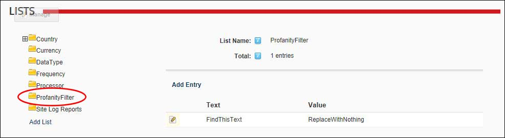

Managing the Profanity List (Host)
How to create and manage a list of replacement words for the Host site. This list allows you to replace unwanted or profane words that are added to messages sent using the Message Center module. Note: You can enter any keyboard characters into both the replaced and replacement fields. E.g. ****
Important. Profanity filters must be enabled on the Host site to use this list. See "Configuring Messaging Settings"
- Navigate to Host >
 Lists.
Lists.
- Select the
 ProfanityFilter list.
ProfanityFilter list.

Getting Started
- Click the Edit
 button beside the list entry called "FindThisText". This list entry has been added as an example and should be updated with real information.
button beside the list entry called "FindThisText". This list entry has been added as an example and should be updated with real information.
- In the Entry Text text box, enter the text to be replaced.
- In the Entry Value text box, enter the replacement word.
- Click the Save button.
Adding a Filtered Word
- Click the Add Entry link.
- In the Entry Text text box, enter the text to be replaced.
- In the Entry Value text box, enter the replacement word.
- Click the Save button.
Editing a Filtered Word
- Click the Edit button beside the list entry called "FindThisText". This list entry has been added as an example and should be updated with real information.
- In the Entry Text text box, enter the text to be replaced.
- In the Entry Value text box, enter the replacement word.
- Click the Save button.
Deleting a Filtered Word
- Click the Delete
 button beside the entry to be deleted. This displays the message "Are You Sure You Wish To Delete This Item?"
button beside the entry to be deleted. This displays the message "Are You Sure You Wish To Delete This Item?"
-
-
See "Configuring Messaging Settings"
-
See "About the Message Center Module"